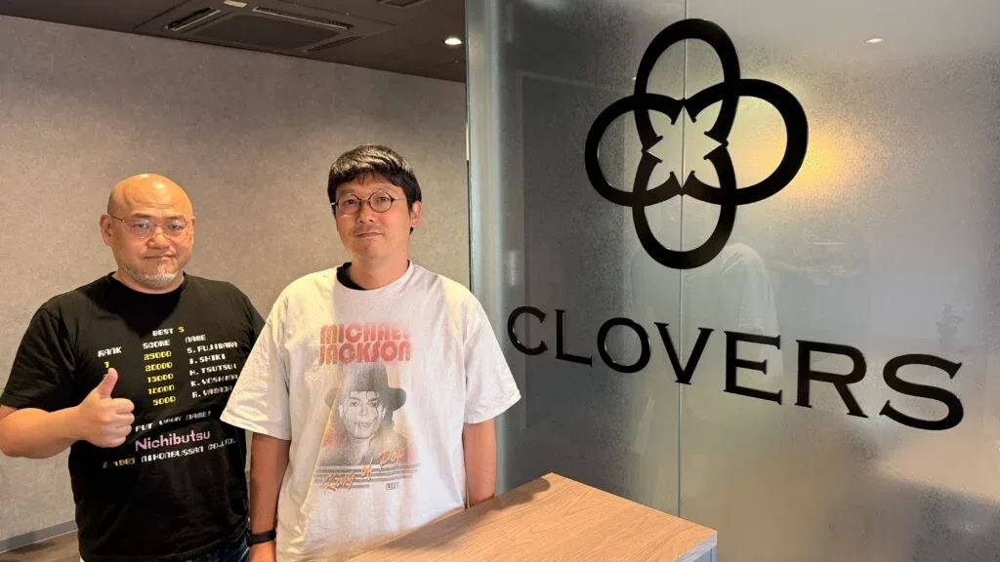

Luiso · 7 de septiembre de 2026
Han pasado casi diez años desde la cancelación de Scalebound, pero Hideki Kamiya todavía no está dispuesto a dar por muerto el proyecto. El creativo japonés aseguró que sigue teniendo el deseo de terminar el juego algún día y que no se trata simplemente de una frase para complacer a los fans.
La declaración surgió durante una extensa entrevista de Video Games Chronicle con Kamiya y Kento Koyama, presidente y CEO de CLOVERS, el estudio independiente que ambos fundaron después de abandonar PlatinumGames.
Durante la conversación, Kamiya recordó su experiencia trabajando en Scalebound y reconoció que, aunque el desarrollo tuvo momentos difíciles, conserva buenos recuerdos de aquella etapa. De hecho, explicó que el proyecto volvió a aparecer recientemente en conversaciones con antiguos integrantes del equipo.
Y su postura no cambió.
“Sigo teniendo muchas ganas de poder terminarlo si es posible, y hablo completamente en serio cuando digo eso”, afirmó Kamiya.
La aclaración más importante es que no existe actualmente ningún acuerdo para recuperar Scalebound. Kamiya reconoció que todavía no habló con Asha Sharma, la actual CEO de Xbox, sobre la posibilidad de retomar el proyecto.
Además, CLOVERS probablemente tampoco tendría en este momento la capacidad para asumir una producción de semejante escala. El estudio continúa creciendo, pero su principal proyecto es actualmente Okami 2, desarrollado en colaboración con Capcom.
La situación tampoco depende exclusivamente de Kamiya: los derechos de Scalebound pertenecen a Microsoft, por lo que cualquier intento de recuperar el juego necesitaría necesariamente el visto bueno de la compañía.
Aun así, el director cree que la historia reciente de Okami 2 demuestra que los proyectos que parecen imposibles pueden encontrar una segunda oportunidad.
El propio Kamiya utiliza precisamente ese caso como referencia: después de muchos años parecía improbable que Okami tuviera una nueva entrega, pero finalmente la oportunidad apareció y CLOVERS terminó trabajando en ella junto a Capcom.
“Creo firmemente que si querés algo con suficiente fuerza, eventualmente encontrás una manera de hacerlo realidad”, explicó el creativo.
Mientras la posibilidad de recuperar Scalebound permanece en el terreno de los deseos, CLOVERS continúa consolidándose como estudio.
La compañía, fundada en 2024, ya superó los 70 empleados y cuenta actualmente con oficinas tanto en Osaka como en Tokio. Durante los últimos meses también incorporó un equipo completo dedicado al apartado sonoro de sus proyectos.
Cinco profesionales se sumaron al estudio en abril: tres compositores y dos diseñadores de sonido. Entre ellos se encuentran colaboradores que ya habían trabajado con Kamiya en proyectos como Okami, Bayonetta y The Wonderful 101.
Según Kamiya y Koyama, uno de los aspectos fundamentales de CLOVERS es mantener la cultura de trabajo que ambos disfrutaban durante su etapa anterior en PlatinumGames. En ese sentido, aseguran que Capcom les está dando un nivel considerable de libertad creativa y confianza durante el desarrollo de Okami 2.
En lugar de exigir avances constantes o intervenir en cada decisión, Capcom permite que el equipo desarrolle sus ideas y presente el material cuando considera que está preparado para ser mostrado.
Para Kamiya, esa relación de confianza resulta fundamental: el estudio puede concentrarse en crear el juego que quiere hacer sin sentir que el publisher está cuestionando permanentemente sus decisiones creativas.
La entrevista también abordó una cuestión especialmente relevante para la industria: el progresivo abandono de los discos físicos.
Kento Koyama considera que la decisión de avanzar hacia un mercado predominantemente digital tiene sentido desde el punto de vista empresarial, aunque personalmente todavía compra versiones físicas cuando se trata de juegos que considera especialmente importantes y que quiere conservar durante mucho tiempo.
Kamiya, por su parte, ha reconocido que actualmente compra prácticamente todos sus juegos en formato digital. Sin embargo, su preocupación está puesta en otro lugar: la preservación de los videojuegos y la responsabilidad de los propietarios de las distintas propiedades intelectuales de mantener disponibles sus obras para las próximas generaciones.
El creativo considera que el debate no debería centrarse exclusivamente en si los juegos se conservan en discos o mediante plataformas digitales, sino en garantizar que los títulos puedan seguir jugándose en el futuro.